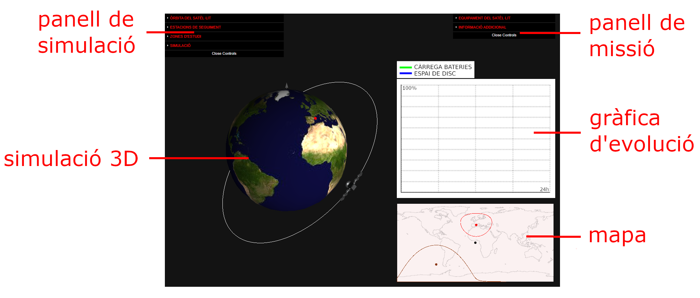

-
En aquesta activitat t’incorporaràs a una missió que has de completar amb l’ajut d’un satèl·lit artificial i una estació de seguiment virtuals.
-
Fes clic al botó Assignació de missió del panell desplegable de missió. S’obrirà una finestra emergent amb la fitxa descriptiva de la missió assignada. Llegeix la fitxa i navega seguint els enllaços per obtenir més informació sobre els fets que motiven la teva missió.

EQUIPAMENT I ÒRBITA DEL SATÈL·LIT
-
Fes clic al botó Sensors del panell de missió. S’obrirà una finestra emergent amb la taula de sensors. Selecciona els sensors que vulguis incloure en el satèl·lit, tenint present el consum energètic i la despesa en espai d’emmagatzematge de dades (sota la taula hi ha els valors totals corresponents als valors triats).
-
Fes una estimació de l'equipament que necessites. Cada panell solar aporta 1 kW de potència i cada unitat de disc emmagatzema fins a 3 GB de dades. La velocitat de transferència de dades a l'estació de seguiment quan s'estableix la comunicació és de 45.000 kb/s. Assigna els valors estimats en el panell de missions.
-
En el panell de simulació, assigna valors als paràmetres del satèl·lit en funció dels objectius de la missió. Per coneìxer l'efecte de cada paràmetre en l'òrbita i en la trajectòria terrestre fes clic en el botó Elements orbitals del panell. El panell mostra el període del satèl·lit corresponent als valors assignats.
-
La missió pot tenir una o diverses zones d’estudi. Pots afegir zones i assignar el radi d’exploració. Mou la zona d’estudi (de color marró en el mapa) arrossegant el punt central de la zona amb el ratolí fins a la ubicació de la missió assignada.
-
El satèl·lit obté dades en les zones d’estudi i les transfereix a una estació de seguiment. Pots afegir estacions de seguiment i assignar el radi de proximitat per establir la comunicació amb el satèl·lit. Per moure una estació (de color vermell en el mapa) s’ha d’arrossegar el punt central de la zona amb el ratolí fins a la nova ubicació.
INICI I MONITORITZACIÓ DE LA MISSIÓ
-
Per iniciar la missió prem el botó INICIA del panell de simulació. En el mateix panell pots canviar la velocitat d’animació. Plega després els panells per observar millor el moviment del satèl·lit i la gràfica d’evolució temporal d’energia i d’emmagatzematge.
-
Pots canviar el punt de vista i el nivell de zoom en la simulació central amb el botó esquerre i la roda del ratolí (la mida del satèl·lit no està a escala, es mostra més gran per facilitar l’observació).
-
El mapa mostra la posició del satèl·lit i la trajectòria terrestre. Comprova si el satèl·lit passa per la zona d’estudi i la cobreix totalment. En cas contrari, canvia els paràmetres i torna-ho a provar.
-
La gràfica d’evolució temporal mostra com varia el percentatge de càrrega de les bateries (en color verd) i de l’espai d’emmagatzematge disponible (en color blau). Si les bateries es descarreguen totalment els sensors no funcionen, augmenta el nombre de panells solars en el panell de missions.
-
Si el satèl·lit no passa per la zona de proximitat a l’estació de seguiment les dades no es poden transferir a l’estació i s’ocuparà tot l’emmagatzematge disponible. Canvia els paràmetres i torna-ho a provar.